Overzicht Formatie-planning
in Personeel
Inleiding
Als formatiebeheerder houdt u uw formatieplanning nauwlettend in de gaten. U heeft daarvoor een overzicht met daarin alle berekeningen voor alle medewerkers voor het komende schooljaar.
 Personeel > Formatie
Personeel > Formatie
Algemeen
U vindt het overzicht bij Personeel > Formatie > Planning aanstellingen en verlof. U ziet hier de volgende groepen kolommen:
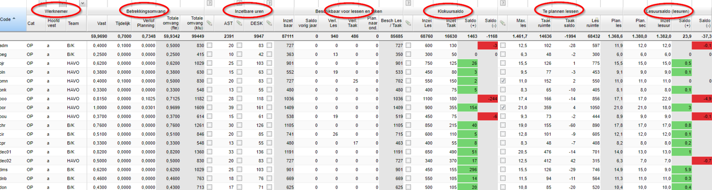
- Werknemer
- Betrekkingsomvang
- Inzetbare uren
- Beschikbaar voor lessen en taken
- Klokuursaldo
- Te plannen lessen
- Lesuursaldo (lesuren)
U filtert hier op team als u deze heeft ingericht of op geen filter.
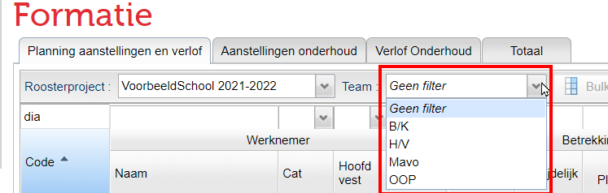
Werknemer
Per werknemer ziet u standaard de code, naam, functiecategorie, hoofdvestiging en het hoofdteam.
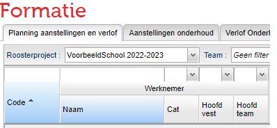
Betrekkingsomvang
Hier ziet u de optelsom van de vaste en tijdelijke aanstelling(en) en het jaarverlof (Verlof planning) omgerekend naar werktijdfactor. Tezamen zorgt dit voor een totale omvang in fte en in klokuren (klu). Eventuele uitbreidingen of deeltijdverloven zijn hierin niet meegenomen. Die vallen immers onder het formatie-onderhoud en niet onder de planning.
Inzetbare uren
Onder Inzetbare uren ziet u de totale omvang omgerekend naar het inzetbaar aantal klokuren. Het aantal uren dat voor algemene schooltaken (AST), deskundigheidsbevordering (DESK) en ontwikkeltijd is gereserveerd wordt hier weergegeven (dit zijn de waarden uit de projectinstellingen (Beheer > Roosterprojecten > Projectinstellingen) en van de totale omvang afgehaald.
In onderstaand voorbeeld ziet u dat docent adm een vaste aanstelling heeft van 0,4000 fte, dit resulteert in 664 klokuren. Daar gaat 12 klokuur AST, 66 klokuur DESK en 21 uur ontwikkeltijd vanaf.
Dit resulteert in de volgende berekening:
664 - 12 - 66 - 21 = 565
Het netto aantal klokuur dat adm inzetbaar is, is 565 klokuur.
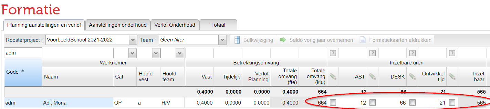
Ontwikkeltijd
Ontwikkeltijd wordt gegeven over het aantal lessen dat een docent geeft, niet over de werktijdfactor. Zermelo berekent dit op basis van het aantal uren dat in de sectieverdeling staat.
De berekening van de daadwerkelijke toeslag is dus:
(het aantal gegeven lessen in de sectieverdeling / maximaal aantal lessen fulltimer) x 50
Hiermee houden we dus ook rekening met scholen die met een andere lengte van de lessen werken en dus meer of minder dan 24 of 25 lessen per week geven.
In het tabblad Planning aanstellingen en verlof is een verborgen kolom. Deze heet Ontwikkeltijd recht. Als u deze in beeld brengt, kunt u altijd zien wat het aantal uren is waar een docent volgens de berekening recht op heeft. Als een docent dan uren overdraagt aan een collega, kunt u dit doen door handmatig de uren aan te passen. Door naar de totalen van de kolom te kijken, ziet u of het aantal uren recht en uitgegeven uren gelijk is gebleven.
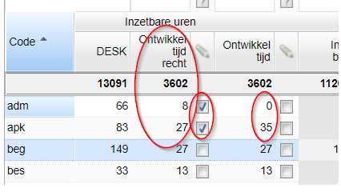
Ontwikkeltijd op basis van werktijdfactor
Als uw school besluit om, buiten de CAO om, de berekening op basis van de werktijdfactor toe te passen, dan is dit mogelijk door de omvang van de ontwikkeltijd buiten het portal te berekenen en vervolgens te importeren. U doet dit als volgt:
- Klik op de knop
, die met de groene pijl. - Klik op de knop
. - Open het exportbestand in Excel.
- Zoek de kolom Inzetbare uren > Ontwikkeltijd handmatig? en vervang bij iedere werknemer nee door ja_._
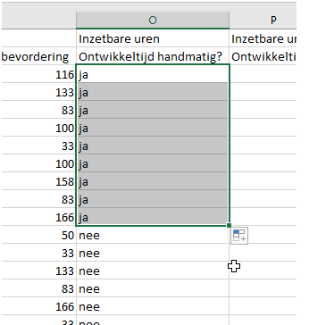
-
Vul bij iedere werknemer de (zelf berekende) ontwikkeltijd in.
-
Sla het document weer op.
- Klik op de knop
, met de blauwe pijl.
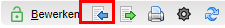
- Selecteer het csv-bestand dat u zojuist heeft aangepast en klik op de knop
. - Klik op de knop
. - U heeft nu in de kolom Ontwikkeltijd handmatig vinkjes staan en de getallen in de kolom Ontwikkeltijd aangepast.
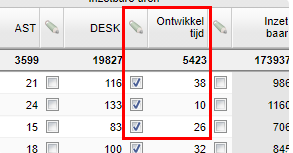
Warning
Berekening is éénmalig
Wanneer u op deze wijze de ontwikkeltijd handmatig aanpast, wordt door deze niet meer automatisch berekend als er bijvoorbeeld een wijziging is in de aanstelling.
Beschikbaar voor lessen en taken
Onder Beschikbaar voor lessen en taken ziet u het aantal klokuur dat een docent daadwerkelijk beschikbaar is voor het verzorgen van lessen en taken. Het uitgangspunt is het aantal inzetbare uren. Als een docent nog een saldo over had van het vorige schooljaar, dan wordt dit bij het aantal inzetbare uren opgeteld. De kolommen 'Verl.les' en 'Verl.taak' worden gevuld indien de medewerker zijn persoonlijk budget (basis) inzet voor respectievelijk lesverlichting of taakverlichting. Indien u alvast uren wilt reserveren voor vervangingen, vult u dit in bij 'Plan. naar ond.'.
Het aantal inzetbare uren voor adm is 558 klokuur. Hij heeft nog een saldo van 102 klokuur over het vorig schooljaar. Dit resulteert in de volgende berekening:
558+102=660 Docent adm is voor 660 klokuur beschikbaar voor lessen en taken.
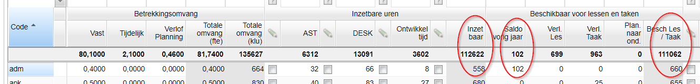
Saldo vorig jaar overnemen
Het is mogelijk om voor docenten een saldo van het vorige schooljaar over te nemen. Om het saldo over te nemen, selecteert u één of meerdere docenten en klikt u op de knop 'Saldo vorig jaar overnemen'
Vervolgens kiest u waar u het saldo op wilt baseren:
- Saldo planning: neemt het saldo over dat u vindt op de pagina Formatie > Planning aanstellingen en verlof bij het voorgaande project. Dit is het saldo op basis van geplande inzet lessen, inzet taken en eventuele taak- en lesverlichting.
- Saldo planning + Saldo uitbreiding: neemt de som van de saldi zoals die bij Formatie > Planning aanstellingen en verlof en Formatie > Aanstelling onderhoud te vinden zijn bij het voorgaande project.
- Saldo totaal: neemt het saldo over dat u vindt op de pagina Formatie > Totaal bij het voorgaande project. Indien u de projectinstelling "Afwezigheid lessen & taken o.b.v. les-/taaktoekenningen" uit hebt gezet, zal het saldo van onderhoudsverloven altijd 0 zijn, en is dit saldo gelijk aan Saldo planning + Saldo uitbreiding.
Klokuursaldo
Onder Klokuursaldo ziet u het aantal klokuren dat een docent is ingezet voor lessen en taken. Inzet taken wordt gevuld vanuit het menu Takenverdeling in het portal. Inzet lessen wordt gevuld vanuit de Lessenverdeling in het portal.
Al deze gegevens resulteren in een (positief of negatief) saldo. Het is uiteraard de bedoeling dat dit saldo zo dicht mogelijk bij de waarde "0" ligt.
In onderstaand voorbeeld zien we bij docent adm dat hij voor 684 klokuur beschikbaar is voor lessen en taken. Adm is voor 600 klokuur ingezet voor lessen (te zien bij de kolom 'Inzet Les'.). In de kolom 'Inzet taak' zien we dat hij voor 130 uur taken heeft gekregen.
Dit resulteert in de volgende berekening: 684-600-130= -46. Het klokuursaldo voor docent adm is dus negatief en is daarom rood gekleurd.
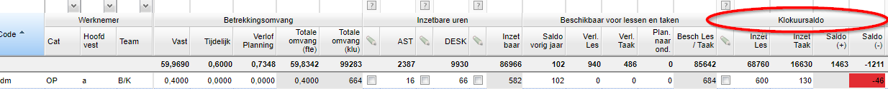
Te plannen lessen
Onder Te plannen lessen wordt de lesruimte en de taakruimte berekend. In de kolom 'Max.les' kunt u zien hoeveel lessen een docent maximaal kan geven op basis van zijn aanstelling. Het maximaal aantal te geven lessen bij een volledige aanstelling kunt u terugvinden in het scherm van de projectinstellingen (Beheer > Roosterprojecten > Projectinstellingen).
De taakruimte wordt berekend op basis van het aantal klokuur dat een docent beschikbaar is voor lessen/taken, min het maximaal aantal lessen, keer het standaard aantal klokuren per les, gecorrigeerd door eventuele taak- en lesverlichting.
Bij het taaksaldo kunt u het resterende taaksaldo zien dat een docent nog kan worden ingezet voor taken. In de kolom 'Lesruimte' ziet u in klokuren de ruimte terug voor het verzorgen van lessen.
Bij 'Plan.les' kunt u het aantal te plannen lessen terug zien. Dit aantal is het maximaal aantal lessen, gecorrigeerd door eventuele lesverlichting of als een docent voor veel klokuren is ingezet voor taken.
In onderstaand voorbeelden lichten we de kolommen toe:
Maximaal aantal lessen
In onderstaand voorbeeld zien we dat docent adm maximaal 10 lessen kan geven. Bij de projectinstellingen is voor deze school ingesteld dat het maximaal aantal lesuren per aanstelling (een volledige aanstelling van 1 fte) 25 is.
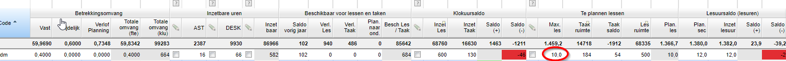
Docent adm heeft een aanstelling van 0,4000 fte. De berekening is dus als volgt: 0,4000 x 25=10.
Bij de berekening van het maximaal aantal lessen houden we rekening met eventuele inzet naar een nevenproject.
Taakruimte
Adm is voor 684 klokuur beschikbaar voor het geven van lessen en taken. Adm kan maximaal 10 lessen geven. Het standaard aantal klokuur per les voor deze school is 50:
Er is bij adm geen sprake van taak- of lesverlichting.
Dit resulteert in de volgende berekening:
684-10 x 50= 184 Adm kan in totaal voor 184 klokuur ingezet worden voor het verzorgen van taken.
Taaksaldo
adm is voor 130 uur ingezet voor taken. Zijn taakruimte is 184. Dit resulteert in de volgende berekening:
184-130=54 Het resterende taaksaldo voor adm is 54 klokuur.
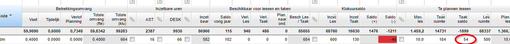
Lesruimte
Het maximaal aantal lessen dat adm kan geven is 10. Het standaard aantal klokuur per les voor deze school is 50. Dat resulteert in de volgende berekening:
10 x 50=500 Docent adm kan voor 500 klokuur worden ingezet voor het geven van lessen.
Plan.les
Docent adm heeft geen lesverlichting en is niet ingezet voor grote taken. Zijn aantal te plannen lessen is dus gelijk aan het maximaal aantal lessen.
Lesuursaldo
In de kolom 'Plan. sec' ziet u het aantal geplande lesuren in secties terug. De kolom 'Inzet lesuur' laat het daadwerkelijk aantal ingezette lesuren zien. Tezamen resulteert dit in een positief of negatief saldo.
In onderstaand voorbeeld zien we dat docent adm het aantal te plannen lessen 10 is. We zien in de kolom 'Inzet lesuur' dat hij voor 12 lesuren is gepland. Dit resulteert in een saldo van -2.
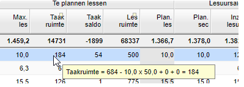
Saldo's
Als u met de muis in de kolom van de taak-, of lesruimte gaat staan, dan geeft de tooltip aan hoe dit saldo tot stand is gekomen:
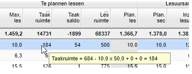
Gegevens importeren en exporteren
Het is mogelijk een csv export te maken van de verschillende gegevens:
- Selecteer 1 of meerdere werknemers
- Klik op de knop
- Klik op de knop
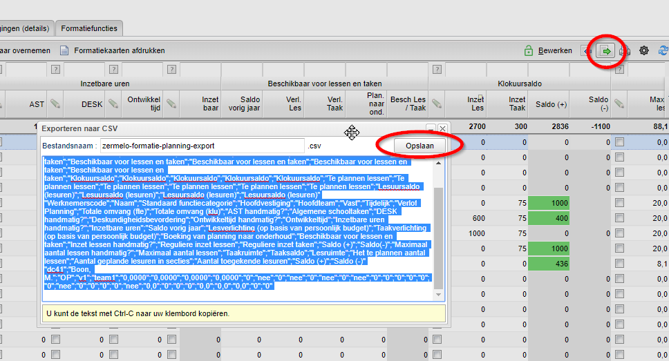
Note
U kunt nu ook gegevens importeren. Dat betekent dat de importknop aan het scherm is toegevoegd.
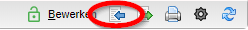
Het gaat om de volgende gegevens:
- AST
- DESK
- Ontwikkeltijd
- Inzetbare uren
- Saldo vorig jaar
- Inzet lessen
- Maximaal aantal lessen
Volgende pagina: Overzicht Formatie-totaal